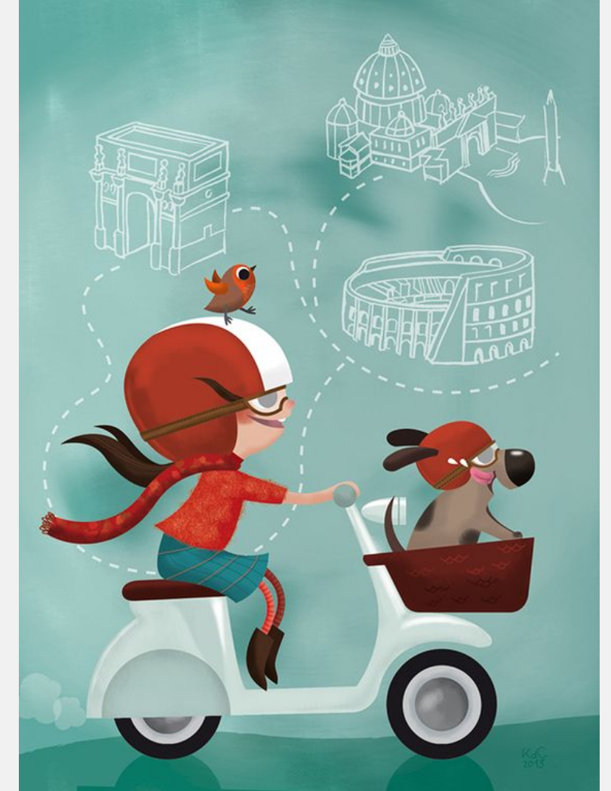
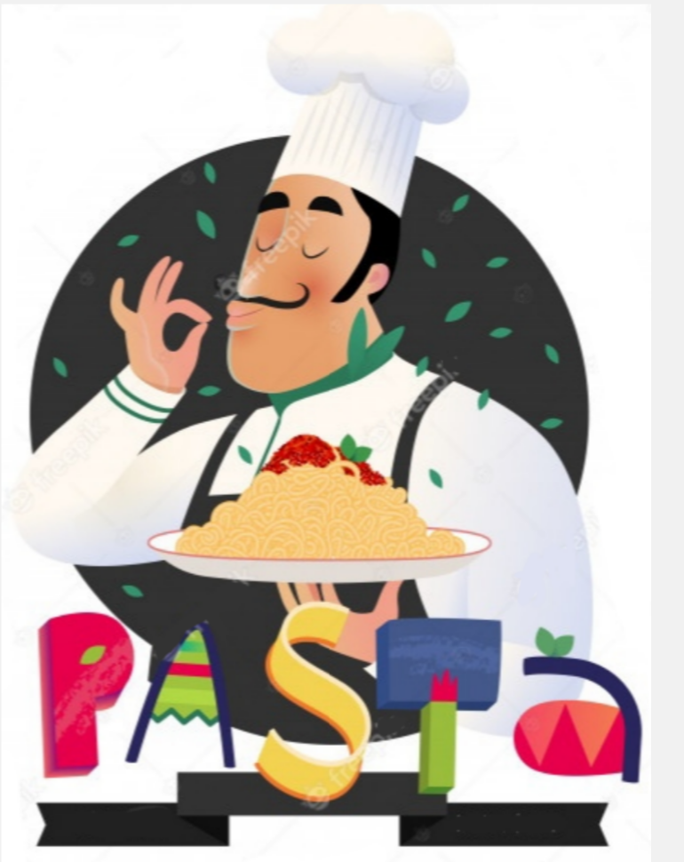

¡Bienvenidos a Diciamolo in italiano!
Punto de partida
Si llegaste aquí significa que sabes la importancia de aprender un nuevo idioma, en este caso el italiano. Y, quizás, por falta de tiempo o recursos nunca pudiste ser constante en su aprendizaje. Pues, ¡viniste al lugar indicado para comenzar!
El aprendizaje de una lengua extranjera no se centra sólo en la memorización de vocabulario y el saberse correctamente la gramática, sino que también conlleva aprender sobre la cultura del país en el que se utiliza el idioma. Es necesario saber sobre la vida cotidiana de la gente del lugar sus tradiciones y su forma de pensar. Es por esto que te presentamos una guía para que te sumergas en el maravilloso mundo del italiano.
¿Por qué elegir italiano?
 Aprender un nuevo idioma es de esas cosas que nunca deberiamos dejar de lado. Hoy día es casi inevitable hablar al menos dos idiomas si quieres encontrar un buen trabajo, por ejemplo. Muchos de nosostros estamos sabemos inglés, estamos más expuestos y hay muchisimos más recursos, incluyendo peliculas y series en inglés para aprovechar. Por eso nuestro camino va por promover esta bella lengua y hacerla más accesible a todos. De acuerdo a estadísticas, existen más de 60 millones de personas alrededor del mundo que hablan este bello idioma de manera nativa.
Los italianos son famosos por su expresividad en todo lo que hacen, desde los gestos cuando hablan,hasta la comida, el arte y, por supuesto, el idioma. El italiano es una lengua bella y romántica, idioma de antiguos pensadores medievales, escritores eternos, poseedora de una musicalidad única y riqueza conceptual en ámbitos muy variados. No solo es el idioma oficial en Italia, sino que es oficial en otros países como Suiza y algunas partes de Croacia y Eslovenia.
Hablar italiano puede abrirte las puertas y hacer más atractivo tu perfil profesional y de negocios para diversas marcas, tales como Fiat, Ferrari, Lamborghini, Armani, Dolce y Gabbana o Versace, por mencionar algunas, que normalmente buscan empleados capaces de hablar el idioma; por otro lado, no sólo te será útil laborar o conseguir trabajo en estas famosas empresas, sino que también podrás abrir puertas en puestos laborales donde se requiera de comunicación constante en el idioma.
 La gastronomía es otra buena razón por la cual debes aprender italiano, lo cual te hará saber que el café se toma en la barra de un bar y no en la mesa, que los espaguetis puedes saborearlo con cuchara y tenedor y que la pizza puedes devorarla con las manos, pero se suele comer con cuchillo y tenedor, como otros platos. La música italiana es una razón de peso para no descartar aprender el idioma. Desde "Con te partirò" de Andrea Bocelli, un himno italiano, Luciano Pavarotti a Laura Pausini y Eros Ramazzotti. Y no olvidemos "Bella Ciao" que se ha convertido en todo un símbolo, escuchado por todas las generaciones,
Finalmente, de acuerdo a especialistas, visitar Italia por su gente es algo que vale la pena, ya que italianos tienen fama de ruidosos, obsesionados con la comida, amigables y hablan con gestos. la cultura italiana se basa en la importancia de la familia y el amor. siempre puedes contar con un italiano para hacer amigos, son muy extrovertidos así que es muy fácil establecer relaciones con ellos, lo cual te puede dar la oportunidad de practicar tu italiano en el mejor ambiente posible.